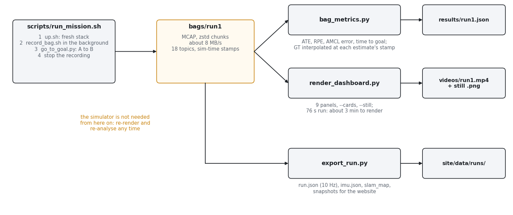
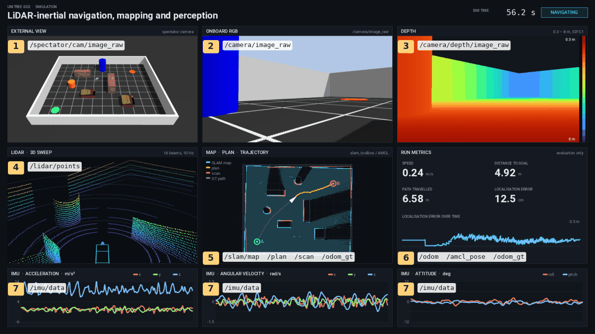

Estimate and map · Chapter 11
Record and visualise (optional video appendix)
| Goal | Record one mission to a bag with one command and render the dashboard video from the bag alone. Optional: no later chapter needs it. Scoring a bag is core and is taught in chapter 9, Task 4.2. |
| Time | 1 h, optional (most of it waiting for the mission and the render) |
| Before you start | Chapter 9, Task 4.2, which explains the numbers. |
| You will learn | why the video is rendered from a bag and not from the live simulator; which topics the recording holds; what each dashboard panel is drawn from. |
The stack records to a rosbag and renders the dashboard from the bag. That keeps the simulator out of the rendering path, so the same run can be re-rendered or re-analysed later.

One recording feeds three offline tools; the topic count is fromscripts/record_bag.sh.
Task 1: Record and score a mission
1.1 Run the mission script
Objective: a fresh stack, a bag and a drive from A to B in one command.
scripts/run_mission.sh bags/run1 # fresh stack, record, drive A to B, stop (about 3 minutes)
RESULT SUCCEEDED sim_time 54.8 s ground-truth final error 0.21 m final pos (3.79, 2.99)
(That output is from the same three steps run by hand: scripts/up.sh, scripts/record_bag.sh, go_to_goal.py.) The script
starts its recorder with setsid, so the recorder leads its own process group, and at the end it stops only that group
(kill -INT -- -"$REC"). A recording you run beside it in another terminal keeps running.
The bag is MCAP with zstd chunk compression. Topics are listed in scripts/record_bag.sh; the timestamps that matter are in the
message headers (simulation time). The 124 s recording above (75 s of mission, then standing) took 785.5 MiB (Bag size in ros2 bag info).
ros2 bag info bags/run1 | grep -E "Duration|Messages"
Duration: 123.555770692s
Messages: 64093
Check: RESULT SUCCEEDED, and ros2 bag info lists the 18 topics of record_bag.sh.
1.2 Score it
Objective: the ATE, RPE and AMCL numbers for this run.
python3 src/go2_nav_sim/scripts/bag_metrics.py bags/run1 --json results/run1.json
The output, its definitions and a comparison with the three reference runs are in chapter 9, Task 4.2.
Check: goal_error_m close to the 0.25 m goal_tolerance_m. Above it means AMCL was off when Nav2 stopped, as in run w3
(0.34 m, chapter 9).
Task 2: Render the video
2.1 Render the dashboard from the bag
Objective: a 1080p video and a still, with no simulator running.
python3 src/go2_nav_sim/scripts/render_dashboard.py bags/run1 videos/run1.mp4 --cards --still videos/run1.png
wrote videos/run1.mp4: 1848 frames
Rendering run w2 (a 97.4 s bag, ros2 bag info bags/w2) into media/go2_a2b_dashboard.mp4 (103.5 s at 15 fps and
1920 × 1080, from ffprobe) took about three minutes on an idle machine. The 124 s bag above took about 7 minutes on a
machine running seven other simulators. Fonts are Roboto and DejaVu Sans Mono if present, with a fallback.

The dashboard still of run w2 (docs/img/dashboard.png), each panel labelled with the topics render_dashboard.py draws it from.
Panels: the external camera, the onboard RGB image, depth in a turbo colour map with its range, a perspective view of the current
lidar sweep coloured by height, the map with the plan, the lidar scan and both trajectories, run metrics, and the IMU over the last
eight seconds. --cards adds a title card and a closing card with the run summary. The metrics panel uses ground truth and says
so.
Twelve seconds of the run w2 video (media/go2_a2b_dashboard.mp4, scaled to 1280 × 720) in the middle of the mission.
Check: ffprobe -v error -show_entries stream=width,height -of csv=p=0 videos/run1.mp4 prints 1920,1080, and the still shows
the robot between A and B.
Measured runs
| Run | Nav2 | Time (s) | Path (m) | To B (m) | ATE (cm) | RPE (%) | AMCL (cm) |
|---|---|---|---|---|---|---|---|
| w1 | succeeded | 54.4 | 11.56 | 0.25 | 1.4 | 1.83 | 8.3 |
| w2 | succeeded | 54.8 | 11.59 | 0.21 | 1.1 | 1.64 | 10.8 |
| w3 | succeeded | 83.1 | 13.79 | 0.34 | 1.7 | 2.41 | 18.7 |
3 consecutive runs of scripts/run_mission.sh from a fresh start, scored by bag_metrics.py (results/run_*.json). Every estimate is paired with ground truth interpolated at its own timestamp. ATE is the RMSE of odometry position after the best rigid SE(2) alignment; RPE is its translational error over 1 m of path; AMCL is the RMSE of AMCL position, scored only at AMCL's own updates. To B is where the robot stopped, measured from B. Nav2 stops once its own estimate is within 0.25 m of B, so that distance mostly reflects the tolerance and the AMCL error at that moment.
Exercise
You only want the numbers of chapter 9, Task 4.2, not the video. Record the smallest bag that bag_metrics.py can score.
Answer: bag_metrics.py reads only /odom, /odom_gt and /amcl_pose (the topic filter in its main()), and it opens the bag
as MCAP. So
ros2 bag record -s mcap -o bags/small /odom /odom_gt /amcl_pose
is enough. Without -s mcap the recorder writes SQLite on Humble and bag_metrics.py cannot open it.
Further reading
- Frey et al., "GrandTour": 49 ANYmal-D missions with lidar, cameras and proprioception against RTK-GNSS and total-station reference trajectories, used to benchmark 63 open-source estimators under one protocol: https://arxiv.org/abs/2602.18164
- Yang et al., "Cerberus": visual-inertial-leg odometry with bags from a Unitree A1 (260 m) and a Go1 (350 m) that include joint encoders and contact sensors: https://arxiv.org/abs/2209.07654
Source: docs/11-record-and-visualise.md